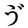
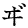

入力ファイルを「テキスト版」に仕上げるために
2002年2月25日 作成
2011年9月10日 修正
青空文庫点検グループ
この文書は当初、作品ファイルのチェック時に求められる情報を共有するための覚えとして、点検グループで書かれた。
後に、入力、校正作業の手引きとしても利用できるのではと見直され、構成をあらためた上で、公開することにした。
作業時の主要な参考資料には、「青空工作員マニュアル」と、「注記一覧」がある。
前者には一部、古くなった記述が残っており、この文書は、「最新の作業方針を示す」という役割もになっている。
「青空工作員マニュアル」、「注記一覧」とともに、作業時の友としてほしい。
入力ファイルはしばしば、ファイル冒頭の記号の説明や、ファイル末の書誌情報など、テキスト版に求められる体裁を欠いたり、マニュアルの規定を満たさないまま、reception に送られてくる。
足りない要素は、公開に至るどこかのステップで補い、ルールから外れた要素は、規定にそってあらためる必要がある。
一般的に、ファイルの整備はできるだけ早いステップで行った方が、全行程を通じた作業総量の削減に繋がると期待できる。
校正時よりは校正用ファイルの準備段階、準備段階よりは入力段階で、要件の整備と、問題点のチェック、修正を行うことが望ましい。
目次
■テキスト版に求められる形式１ ファイル名
表：「青空文庫におけるローマ字のつづり方」
■テキスト版に求められる形式２ Windows ファイル形式
（Windows 利用者は、読む必要がありません。）
■テキスト版に求められる形式３ 体裁
■テキスト版に求められる形式４ 本文
■テキスト版に対して行うべき文字種のチェック
「青空工作員マニュアル」「3.入力-2」「文書の保存」は、作品名のローマ字表記に拡張子「.txt」をつけたものを、ファイル名とするよう、求めていると読める。
作品名のローマ字表記は、「ローマ字のつづり方」（昭和29年12月9日 内閣告示）第1表をもととして、一部に第2表を採用した、「青空文庫におけるローマ字のつづり方」による。
「青空文庫におけるローマ字のつづり方」
赤字は、第2表の表記を採用した箇所。
| a | i | u | e | o | | | |
| ア | イ | ウ | エ | オ | | | |
| ka | ki | ku | ke | ko | kya | kyu | kyo |
| カ | キ | ク | ケ | コ | キャ | キュ | キョ |
| sa | shi | su | se | so | sha | shu | sho |
| サ | シ | ス | セ | ソ | シャ | シュ | ショ |
| ta | chi | tsu | te | to | cha | chu | cho |
| タ | チ | ツ | テ | ト | チャ | チュ | チョ |
| na | ni | nu | ne | no | nya | nyu | nyo |
| ナ | ニ | ヌ | ネ | ノ | ニャ | ニュ | ニョ |
| ha | hi | fu | he | ho | hya | hyu | hyo |
| ハ | ヒ | フ | ヘ | ホ | ヒャ | ヒュ | ヒョ |
| ma | mi | mu | me | mo | mya | myu | myo |
| マ | ミ | ム | メ | モ | ミャ | ミュ | ミョ |
| ya | (i) | yu | (e) | yo | | | |
| ヤ | イ | ユ | エ | ヨ | | | |
| ra | ri | ru | re | ro | rya | ryu | ryo |
| ラ | リ | ル | レ | ロ | リャ | リュ | リョ |
| wa | (i) | (u) | (e) | (o) | | | |
| ワ | イ | ウ | エ | オ | | | |
| ga | gi | gu | ge | go | gya | gyu | gyo |
| ガ | ギ | グ | ゲ | ゴ | ギャ | ギュ | ギョ |
| za | ji | zu | ze | zo | ja | ju | jo |
| ザ | ジ | ズ | ゼ | ゾ | ジャ | ジュ | ジョ |
| da | ji | (zu) | de | do | ja | ju | jo |
| ダ | ヂ | ヅ | デ | ド | ヂャ | ヂュ | ヂョ |
| ba | bi | bu | be | bo | bya | byu | byo |
| バ | ビ | ブ | ベ | ボ | ビャ | ビュ | ビョ |
| pa | pi | pu | pe | po | pya | pyu | pyo |
| パ | ピ | プ | ペ | ポ | ピャ | ピュ | ピョ |
| kwa | | | | | | | |
| クヮ | | | | | | | |
| gwa | | | | | | | |
| グヮ | | | | | | | |
| | | | | wo | | | |
| | | | | ヲ | | | |
1 はねる音「ん」はすべて n と書く。
2 はねる音を表す n と次にくる母音字または y とを切り離す必要がある場合には、n の次に ' を入れる。（例：jun'ichiro）
3 つまる音は、最初の子音字を重ねて表わす。
4 長音を表すために母音字の上に付ける「＾」は、用いない。
5 助詞の「〜は」「〜へ」「〜を」は、発音に従って「〜wa」「〜e」「〜o」と書く。
例）「吾輩は猫である」 wagahaiwa_nekodearu.txt
「川端康成へ」 kawabata_yasunarie.txt
「機関車を見ながら」 kikanshao_minagara.txt
長音の扱いに関しては、以下を参考にする。
「現代仮名遣い」（昭和61年7月1日、内閣告示第1号）「付表」において長音符号「ー」付きで「現代語の音韻」が示されているもの
※「オー」に対する「おお」は、「付表」には見られないが、青で示した形で入れるのが妥当と考えて、加えた。
現代語
の音韻 | 現代仮名遣いで
用いる仮名 | 長音記号を省いた
ローマ字表記 | 例 |
| ユー | ゆう | yu | yuzo（雄三） |
| いう | |
| オー | おう | o | ogai（鴎外） |
| オー | おお | o | osaka（大阪） |
| コー | こう | ko | koson（篁村）
kotaro（光太郎） |
| ゴー | ごう | go | go（郷） |
| ソー | そう | so | so（宋） |
| ゾー | ぞう | zo | zo（日出造） |
| トー | とう | to | toson（藤村） |
| ドー | どう | do | todo（藤堂） |
| ノー | のう | no | nomi（能美） |
| ホー | ほう | ho | hodaiji（宝代地） |
| ボー | ぼう | bo | boya（坊屋） |
| ポー | ぽう | po | |
| モー | もう | mo | mori（毛利） |
| ヨー | よう | yo | yoichiro（陽一郎） |
| ロー | ろう | ro | royama（蝋山） |
| キュー | きゅう | kyu | kyu（邱） |
| ギュー | ぎゅう | gyu | |
| シュー | しゅう | shu | shuzo（周三） |
| ジュー | じゅう | ju | juro（十郎） |
| チュー | ちゅう | chu | chuya（中也） |
| ニュー | にゅう | nyu | |
| ヒュー | ひゅう | hyu | hyuga（日向） |
| ビュー | びゅう | byu | |
| リュー | りゅう | ryu | ryunosuke（竜之介） |
| キョー | きょう | kyo | kyoka（鏡花） |
| ギョー | ぎょう | gyo | gyobu（刑部） |
| ショー | しょう | sho | sho（荘） |
| ジョー | じょう | jo | jo（城） |
| ぢょう | |
| チョー | ちょう | cho | cho（長） |
| ニョー | にょう | nyo | nyomura（饒村） |
| ヒョー | ひょう | hyo | hyotani（俵谷） |
| ビョー | びょう | byo | |
| ピョー | ぴょう | pyo | |
| ミョー | みょう | myo | myojin（明神） |
| リョー | りょう | ryo | ryoto（両頭） |
「付表」において、長音符号「ー」付で「現代語の音韻」が示されていないもの
現代語
の音韻 | 現代仮名遣いで
用いる仮名 | 長音記号を省いた
ローマ字表記 | 例 |
| イイ | いい | ii | iimura（飯村） |
| キイ | きい | kii | kii（紀伊） |
| シイ | しい | shii | shii（志位 ） |
| チイ | ちい | chii | chii（地井） |
| ニイ | にい | nii | nii（新居） |
| ヒイ | ひい | hii | hiiro（日色） |
| ミイ | みい | mii | miida（三井田） |
| リイ | りい | rii | |
| ギイ | ぎい | gii | |
| ジイ | じい | jii | jiisan（じいさん） |
| ビイ | びい | bii | |
| ピイ | ぴい | pii | |
| エイ | えい | ei | ei（永）
eiichiro（栄一郎） |
| ケイ | けい | kei | kyukei（球渓） |
| セイ | せい | sei | seike（清家） |
| テイ | てい | tei | teika（貞家） |
| ネイ | ねい | nei | nei（根井） |
| ヘイ | へい | hei | heiwa（平和） |
| メイ | めい | mei | meiwa（名和） |
| レイ | れい | rei | reiun（嶺雲） |
| ゲイ | げい | gei | geiami（芸阿弥） |
| ゼイ | ぜい | zei | reizei（冷泉） |
| デイ | でい | dei | dei（出井） |
| ベイ | べい | bei | beichu（米仲） |
| ペイ | ぺい | pei | teppei（鉄平） |
作品名のどこまでをローマ字表記するかについては、マニュアルに規定がないが、同一名称を回避する上では、長めにとった方が有利と思われる。（ただし、ファイル名の総文字数は、XHTML への変換後の拡張子「.html」の5文字分を含めて、Macintosh クラシック OS（OS X 以前の、バージョン9までのもの） の制限である31文字におさまるよう、調整している。）
ファイル名が長くなると、視認性が悪くなる。
アンダースコアー「_」を用いて、以下のように分かち書きすることが望ましい。
鏡の中の月 kagamino_nakano_tsuki.txt
パソコン入力時の作法に従って、「学校」を「gakkou」、「鴎外」を「ougai」などとしたファイルがしばしばみられる。
これらは、上記作業方針に従い、「gakko」、「ogai」とあらためる。
青空文庫のテキスト版は、第1第2水準の漢字などを定めた、JIS X 0208にある文字を用い、Shift_JISでエンコーディングした、Windowsで広く使われてきた形式で作っている。
Macintosh を利用してファイルを作ったり、チェックしたりする際は、改行コードを Windows のものに合わせることと、リソースフォークと呼ばれる、Macintosh 固有の特殊なデータを削除してやることが求められる。
※この項目は、Windows 利用者は、読む必要がない。→「テキスト版に求められる形式３ 体裁」にジャンプする。
【改行コード】
「青空工作員マニュアル」「3.入力-2」「文書の保存」は、ファイルの改行コードを Windows 標準の「CR＋LF」とするよう求めている。
Macintosh の クラシック OS では改行コードとして一般的に「CR」が、OS X では「LF」が用いられるため、入力者は意図的にこれを、「CR＋LF」に設定、もしくは変更する必要がある。
クラシック OS に付いてきた SimpleText や、OS X に付いてくるテキストエディットでは、改行コードを「CR＋LF」に設定することができない。
ただし、多くのエディターでは、「編集」＞「別名で保存」といった項目を選んで改行コードを「CR＋LF」に設定し、保存することができる。
なお、点検グループでも、改行コードの確認と調整を励行している。
【リソースフォークの削除】
Macintosh で作成されたファイルにはすべて、リソースフォークと呼ばれる、表からは見えないデータが付け加えられる。
この「おまけデータ」を活かして、Macintosh は操作性の向上を図っているが、Windows でリソースフォーク付きのファイルを開こうとすると、文字化けなどの問題が生じることがある。
こうした事態を避けるために、テキスト版はすべて、リソースフォークなしの形で登録している。
Macintosh を用いてテキストを作成する人には、入力ファイルや、チェック済みのファイルを送る際、圧縮ソフトの機能を利用して、リソースフォークを取り除いておくことが期待される。
なお、点検グループでも、リソースフォークの排除を、作業手順に組み込んでいる。
テキスト版に求められる体裁の整備は、「青空工作員マニュアル」「2.入力-1」の「■基本となる書式」にのっとっておこなう。
【ファイル冒頭の「記号について」】
テキストファイルの冒頭には、「■基本となる書式」にのっとって、「テキスト中に現れる記号について」を入れる。
「記号について」の（例）には、原則として、当該作品の中で一番最初に現れたものを入れる。
「ルビ」の例は、ファイルの冒頭から「《」で検索をかけて、最初にヒットしたものを入れる。
「ルビの付く文字列の始まりを特定する記号」の例は、ファイルの冒頭から「｜」で検索をかけて、最初にヒットしたものを入れる。
「入力者注」の例は、
1 外字に関するものがあれば、その中で初出のもの、
2 外字に関するものがなければ、それ以外で初出のもの、
を入れる。
2に該当するものとしては、以下のような、傍点注記や字下げ注記などがあるが、それらの中では、どれかを優先することは行っていない。
（例）うね［＃「うね」に傍点］
（例）［＃ここから２字下げ］
2を例として掲げる場合、「（数字は、JIS X 0213の面区点番号またはUnicode、底本のページと行数）」の行は、削除する。
「返り点」、「訓点送り仮名」の例も、それぞれ初出のものを入れる。
「二倍の踊り字」の例は、ファイルの冒頭から「／」で検索をかけて、最初にヒットしたものを入れる。
「／＼」のみが使われていて、「／″＼」はみられない場合には、「＊濁点付きの二倍の踊り字は「／″＼」」の部分のみを、削除する。
アクセント分解の例は、ファイルの冒頭から「〔」で検索をかけて、最初にヒットしたものを入れる。
該当する記号が使われていない場合には、その項目は削除する。
【ファイル末尾の注記】
テキストファイルの末尾には、「■基本となる書式」にのっとって、「青空文庫収録ファイルへの記載事項」を入れる。
新規公開されたテキスト版を開くと、記載事項の最終行、「このファイルは、インターネットの図書館、青空文庫（http://www.aozora.gr.jp/）で作られました。入力、校正、制作にあたったのは、ボランティアの皆さんです。」の後ろで、改行されているのがわかる。
記載事項の最後で、このように改行しておく。
調べのついていない項目（「底本の親本」や「初出」など）、必要のない「※〜」形式の注記は、それぞれ削除する。
あらかじめ書き込まれていた注記に、不適切と思われる表現に対する旧形式のもの（1）が入っていた場合は、ファイル末からは削除して、図書カードの備考欄に新形式の注記（2）を入れる。（あなた自身が図書カードの備考欄に（2）を書き入れることができなければ、 に連絡して、記載を求める。）
に連絡して、記載を求める。）
（1）旧形式注記：
※本作品中には、身体的・精神的資質、職業、地域、階層、民族などに関する不適切な表現が見られます。しかし、作品の時代背景と価値、加えて、作者の抱えた限界を読者自身が認識することの意義を考慮し、底本のままとしました。（青空文庫）
（2）新形式注記：
この作品には、今日からみれば、不適切と受け取られる可能性のある表現がみられます。その旨をここに記載した上で、そのままの形で作品を公開します。（青空文庫）
入力時、校正時に、不適切と思われる表現に対する注記が必要と感じた際は、対象として想定した表現を書き添えて、に、図書カードへの書き込みを求めてほしい。
青空文庫のテキスト版本文に関しては、「ルビを「《》」におさめて示す」、「被ルビ文字の区切りを示す記号として「｜」を用いる」などの約束事がある。
JIS X 0208 にない文字や、底本のレイアウト情報をどう取り扱うかに関しても、定めがある。
求めに応じていないファイルは、方針に従って修正する。
【ルビ記号】
「青《あお》空《ぞら》文《ぶん》庫《こ》」のように、分割しすぎたものが見られる。
過分割されたものは、「青空工作員マニュアル」「2.入力-1」の「（５）特殊な表記」【ルビ】の規定に従って、適当な形にまとめる。
姓と名のルビは「夏目漱石《なつめそうせき》」のように、分割しない。
名前と肩書、敬称なども、「千田実画伯《せんだみのるがはく》」、「内海紀伊様《うつみきいさま》」のように原則としてまとめる。
ただし、複数の肩書が続くなどして、ルビのまとまりがあまりに長くなりすぎると思われる場合には、以下のように、区切れ目を設けても良い。
従四位下《じゅよんいのげ》左近衛少将《さこんえのしょうしょう》兼《けん》越中守《えっちゅうのかみ》細川忠利《ほそかわただとし》
漢文に付けられたルビも、「三十七年如一瞬《さんじゅうしちねんいっしゅんのごとし》」のように、原則として分割しない。
一方、助詞などを省いて接する異なった言葉に付いたルビが、「日暮《ひく》れて道遠《みちとお》し」のようにまとめられることがある。
こうしたケースでは、語の異なりを意識して、「日《ひ》暮《く》れて道《みち》遠《とお》し」のように分割する。
まとめるべき複合語や、姓名などのルビの一部が省かれていることで、以下のような、不自然な単位へのルビ付けが生じる場合がある。
田｜巻安里《まきあんり》 （人名）
火《ひ》の見階子《みばしご》
一｜代分限《でえぶんげん》
こうした際は、以下のように、違和感が生じないまとまりに分割する。
田｜巻《まき》安里《あんり》 （人名）
火《ひ》の見《み》階子《ばしご》
一｜代《でえ》分限《ぶんげん》
【被ルビ文字の区切り記号】
入力されていないものが、かなりある。
「テキスト中に現れる記号について」の例を求めるために、「｜」で検索してヒットしない場合は、ただちに「使われていない」と判断するのではなく、「必要なものが入力されていない」可能性があると受けとめ、ファイルの冒頭から「《」で検索をかけてみる方がよい。
「｜」が入力されていない場合は、「青空工作員マニュアル」「2.入力-1」の「（５）特殊な表記」【ルビ】の規定に従って、必要な箇所に「｜」を入力する。
1バイト（半角）の「|」で入力されたものは、2バイト（全角）の「｜」に置き換える。
【外字注記】
青空文庫の入力は、現時点では、JIS X 0208 と呼ばれる文字コードによって行っている。
0208 にない文字は、青空文庫のファイル中では用いない。
底本に、0208 にない文字がある際は、「注記一覧」の「外字」の規定に従って、「外字注記」と呼んでいる形で入力する。
外字注記する文字のうち、JIS X 0213にあるものは、字体の説明に加えて0213の面区点番号を添える。
JIS X 0213にはないけれど、Unicodeにあるものには、そのコードを添える。
外字注記の書き方は、「青空文庫・外字注記辞書」にまとめられているので、その最新版の記載内容を、コピー＆ペーストしてほしい。
外字注記用の括弧、［ ］にはしばしば、誤って１バイト（半角）のものが使われる。
１バイト（半角）のものは、２バイト（全角）のものに置き換える。
JIS X 0213 には、漢字以外の文字も規定されている。
底本に次のような記号、文字が現れた場合は、面区点番号のみを付して、以下のように外字注記する。
 ※［＃二の字点、1-2-22］
※［＃二の字点、1-2-22］
 ※［＃歌記号、1-3-28］
※［＃歌記号、1-3-28］
 ※［＃濁点付き平仮名う、1-4-84］
 ※［＃濁点付き片仮名ヰ、1-7-83］
 ※［＃濁点付き片仮名ヱ、1-7-84］
※［＃濁点付き片仮名ヱ、1-7-84］
 ※［＃濁点付き片仮名ヲ、1-7-85］
※［＃濁点付き片仮名ヲ、1-7-85］
※［＃感嘆符二つ、1-8-75］
 ※［＃疑問符二つ、1-8-76］
※［＃疑問符二つ、1-8-76］
 ※［＃疑問符感嘆符、1-8-77］
※［＃疑問符感嘆符、1-8-77］
※［＃感嘆符疑問符、1-8-78］
 ※［＃ローマ数字1小文字、1-12-21］
※［＃ローマ数字1小文字、1-12-21］
 ※［＃ローマ数字1、1-13-21］
※［＃ローマ数字1、1-13-21］
※［＃丸1、1-13-1］
これら非漢字の外字注記の書き方も、「青空文庫・外字注記辞書」に従う。
なお、「〜水準」という呼び名は漢字に限られるので、非漢字に関しては用いない。
【二倍の踊り字（くの字点）】
くの字点はJIS X 0208にはないが、例外として、斜線「／」と逆斜線「＼」を組み合わせて、「／＼」のように入力する。
「／＼」に関しては、誤入力される可能性は低い。
濁点付きくの字点は、「″」（秒、1-77）をはさんで「／″＼」のように入力する。
「／″＼」に関しては、誤って「／〃＼」「／“＼」「／”＼」などと入力したものがある。
「／〃＼」「／“＼」「／”＼」があれば、「／″＼」にあらためる。
（濁点付きくの字点は、濁点「゛」を用いて「／゛＼」とする方が、適切かもしれない。けれど、過去に「／″＼」が選ばれ、これに従ってファイルがつくりためられた経緯を踏まえて、この方針が維持されている。）
【レイアウト注記】
書籍ではしばしば、あるまとまった内容の切れ目で、ページや段を改めたり、本文の一部を字下げするなどのレイアウト処理が行われている。
「青空工作員マニュアル」はこうした箇所の入力にあたって、処理の内容を注記するよう求めている。（「2.入力-1」■入力の実際（２）レイアウト関連）
テキスト版から xhtml 版を自動作成するよう切り替えるに際して、レイアウトに関する注記の規定を、より広い範囲にわたって、厳密に定めることになった。
レイアウト注記に関する約束事は、「注記一覧」にまとめている。
【片仮名の「ケ」のように見える文字】
片仮名の「ケ」のように見える文字の内、文章の流れから、「こ」「か」「が」と読むと思われるものは、青空文庫では、区点番号5-86の「ヶ」で入力する。
片仮名の「ケ」でファイルを検索して、「こ」「か」「が」と読むところに使われていれば、「ヶ」にあらためる。
底本がこれを小書きせず、他の文字と同じ大きさにつくっている場合は、ファイル末に以下のように注記する。
※底本は、物を数える際や地名などに用いる「ヶ」（区点番号5-86）を、大振りにつくっています。
この作業方針の根拠と詳細は、「区点番号5-17と5-86の使い分け指針」を参照してほしい。
【チェッカー君】
チェッカー君を利用することで、青空文庫では使わない機種依存文字や、不適当に用いられた半角スペース、半角記号などを見つけ出すことができる。
チェッカー君は、「文字チェッカー」として長く利用されてきたツールの、最新版である。半角記号類の、チェック対象文字が拡充されている。旧版をブックマークしている人は、こちらに切り替えてほしい。
・機種依存文字
入力ファイルには、WindowsやMacintoshといった固有の機種でしか表示されない、「Windows の機種依存文字」、「Macintosh の機種依存文字」に掲げられた類の特殊な文字が使われていることがある。
Windows では、JIS X 0208 の規格にない、89区以降に見る漢字が、数多く独自に拡張されている。
入力ファイルにしばしば紛れ込んでくるこれらは、他の環境では文字化けする。
機種依存文字が見つかったら、１、２いずれかの方法で対処する。
１ JIS X 0208 の区点位置に包摂されるものは、0208 の区点位置で入力する。（これに該当する、出現頻度の高いものを、以下にいくつか掲げる。）
「塚」（つくりに、一点が多い）は、「塚」で入力する。
「增」（つくりの上が、異なる）は、「増」で入力する。
「綠」（つくりの上が、異なる）は、「緑」で入力する。
「靑」（下が、「月」ではなく、「円」）は、「青」で入力する。
「晴」（「青」の下が、「月」ではなく、「円」）は、「晴」で入力する。
「淸」（「青」の下が、「月」ではなく、「円」）は、「清」で入力する。
「礼」「神」「祥」「福」は、それぞれ「礼」「神」「祥」「福」で入力する。
「敎」（へんの上が、異なる）は、「教」で入力する。
「閒」は、「間」で入力する。
「黑」は、「黒」で入力する。
２ １に当てはまらない文字は、外字として注記する。
見つかった機種依存文字が１、２のどちらにあたるかも、「青空文庫・外字注記辞書」で簡単に見分けられ、どう対処するべきかがわかる。
上記「Windowsの機種依存文字」「NECのIBM拡張文字」の89区7961に配置された、旧字の「塚」（つくりに、一点が多い）を「青空文庫・外字注記辞書」で引くと、「包摂適用」とあり、１に該当し、「塚」で入力するべきものとわかる。

同じく「NECのIBM拡張文字」の89区7921に配置された「纊」を参照すると、２に該当し、※［＃「糸＋廣」、第3水準1-90-23］と外字注記するべきものとわかる。

・不適当に用いられた、半角スペース、半角記号
Windows で入力されたファイルにはしばしば、不適当に用いられた半角スペースや、半角記号が紛れ込む。
全角の鍵括弧（「）の代わりに、半角のスペースと半角の鍵括弧を組み合わせて（ ｢）などと入力されたものは、人の目によるチェックがきわめて困難である。
全角のスペース（ ）の代わりに、半角のスペース二つを組み合わせたものも、判別しがたい。
行末などに、半角のスペースが多数、眼に見えない形で入力されている例もある。
チェッカー君によって、こうした不適当な半角スペース、半角記号が見つかった際は、全角スペース、全角の記号などに置き換え、行末などに不要に挿入された半角のスペースは、削除する。
【校閲君】
旧字作品のファイルには、しばしば底本に使われていない新字や俗字が紛れ込む。
これらを見逃さないために、旧字作品は、最新版の校閲君でチェックする。（リンク先にあるものは、最新版。旧版をブックマークしている人は、最新版に切り替えてほしい。）
校閲君は、置き換えが必要かもしれない文字の右に、「▼雑雜▲」のように、想定される候補をそえて示す。
こうした指摘があった文字は、底本の当該箇所を当たり、右の代替候補が使われていないか確認する。
もし右が使われていれば、現在入っている左に代えて、右を入力する。
校閲君の指摘にもかかわらず、底本に左が使われていれば、代替候補にあらためることはしない。